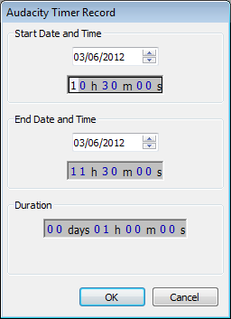

Playing and Recording
From Audacity Manual
Contents
Controlling Playback and Recording
Transport Toolbar
The easiest way to control Audacity playback and recording is with Transport Toolbar:
This offers buttons (from left to right in the image above) for Pause, Standard Speed Play/Loop-Play, Stop, Skip to Start, Skip to End, Record/Append-Record.
Clicking Play plays from the cursor point to the end of the project, or from the start of the selection region to the end of that region.
The alternative Loop-Play action for the Play button is activated by holding SHIFT while clicking Play. The button changes to display two circular green arrows to indicate Loop-Play.
The alternative Append-Record action for the Record button is activated by holding SHIFT while clicking Record. The button changes to display the append record button.
Clicking Play when the track is already playing or paused is a quick way to restart playback without first pressing Stop.
Using keyboard shortcuts
When you get more used to Audacity, it's often easier to use keyboard shortcuts for repetitive actions like playing, pausing and recording. Below is a list of the equivalent keyboard shortcut for each of the Transport Toolbar buttons, with a description of what each button and its shortcut does.
Button Shortcut What it does Pause P Press once to pause playback or recording then once to resume. Play or Stop SPACE Press once to start playback then once to stop. Starting playback again starts from its original starting position at the cursor. Loop-Play SHIFT + SPACE Play the entire selection repeatedly (or the entire track if no selection) until stopped. Skip to Start HOME Move the cursor to start of project. Skip to End END Move the cursor to end of project. Record R Record in a new track starting from the cursor position or start of the selection. Append-Record SHIFT + R Record starting from the end of the selected track(s).
There is an additional command which has the shortcut SHIFT + A. This acts exactly like SPACE when starting playback, but when used to stop, the cursor or start of the selection is set to the position where playback was stopped. Using either SPACE or SHIFT + A will then start playback from that stop position.
All the above shortcuts can be changed if desired in Keyboard Preferences.
Adjusting the Playback volume
You can adjust the playback volume using the output level slider in the Mixer Toolbar.
The Playback Meter will show you the overall volume of all of your tracks when mixed together.
Playing at slower or faster speeds than normal
Using the Play button in Transcription Toolbar plays at a constant speed but slower or faster than normal. Envelope Tool on the Tools Toolbar, when used in conjunction with a Time Track, allows a speed envelope to be drawn which can increase or decrease playback speed over the length of the audio.
Playback
For fuller details of how to use playback, including keyboard shortcut commands and how to play preview short sections, please see the Playback page.
Quick-Play using the Timeline
Timeline Quick-Play provides a quick and convenient means to either start playback from any point within the current project or to playback a region of audio.
For details see the Quick-Play section on the Timeline page.
Scrubbing and Seeking
Scrubbing is a playback interaction in which the user drags the playback cursor across the waveform to hear it, a convenient way to quickly navigate an audio file and find particular pieces of audio. Scrubbing mode in Audacity is initiated with CTRL + left-click, Audacity will remain in scrubbing mode until you return it to normal pay mode. Clicking the Stop button  (or its shortcut Space) at any time will stop scrub play and return you to normal play mode.
(or its shortcut Space) at any time will stop scrub play and return you to normal play mode.
Please see Scrubbing and Seeking for details
Recording
For fuller details of how to use recording, including how to control where and which track you record in and keyboard shortcut commands, please see the Recording page.
Overdubbing
You can record a new track while listening to previously recorded tracks. This is called overdubbing. To set up for overdubbing, make sure that is enabled (on) which is its default setting. See the tutorial set Recording Multi-track Overdubs for more help with overdubbing.
If there is a region in the Timeline, that region will be recorded in a new track. After stopping recording, Audacity will push the recorded track backwards by 130 milliseconds by default to attempt to align it with the previous tracks(s). Left-pointing arrows will appear at time zero when any of the recorded track is pushed behind zero (standard Export ignores audio before zero but Export Multiple includes it). It is recommended to perform a latency test to determine the optimum backwards correction then set that value at Latency correction in Recording Preferences.
Timer Recording
Yet another way to record is using the Timer Record utility, found in the Transport Menu.
- 
Use it to start recording later, or to record for a certain duration before stopping.
Sound Activated Recording
If you turn on you can make recording pause until the input level exceeds the specified threshold level at .